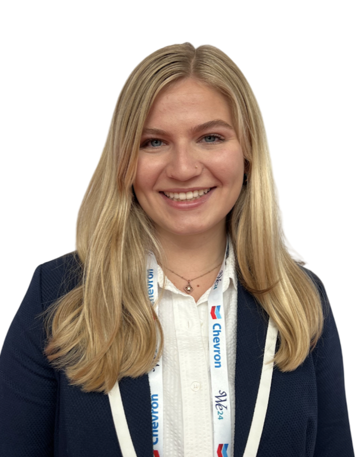
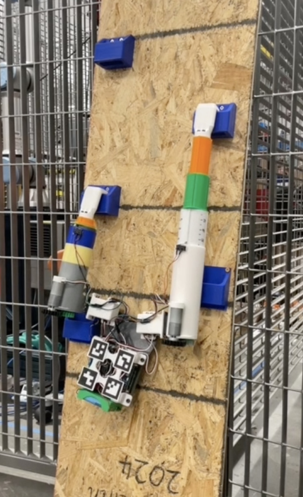
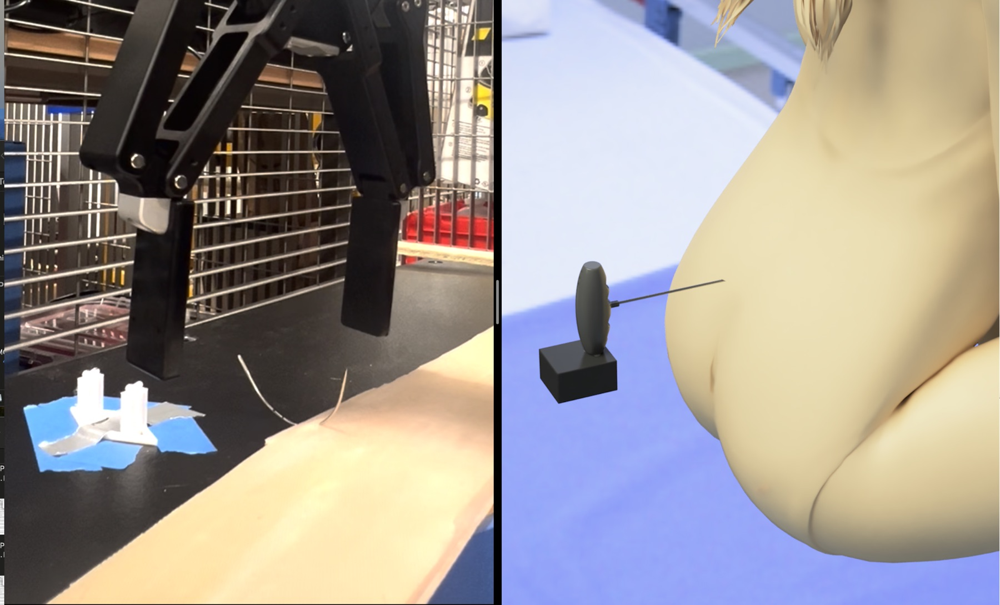
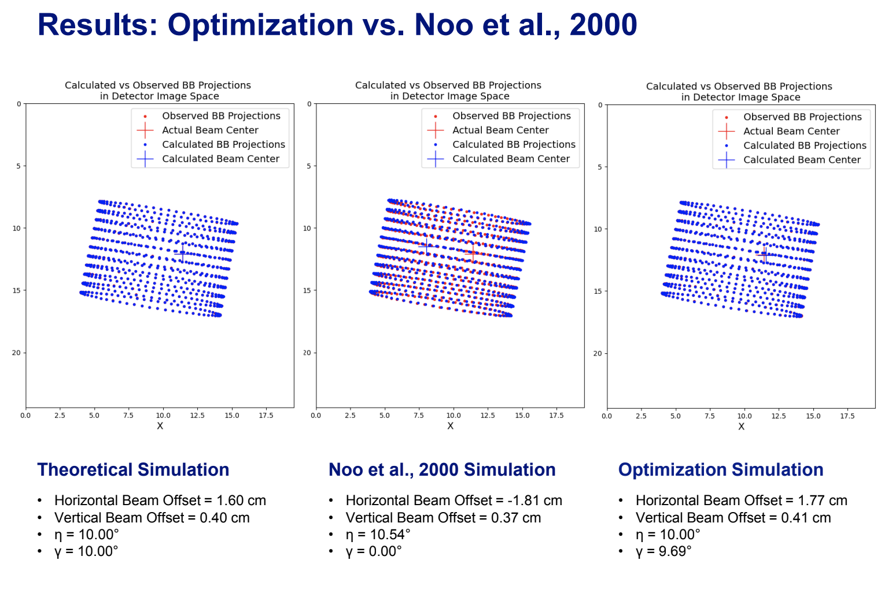
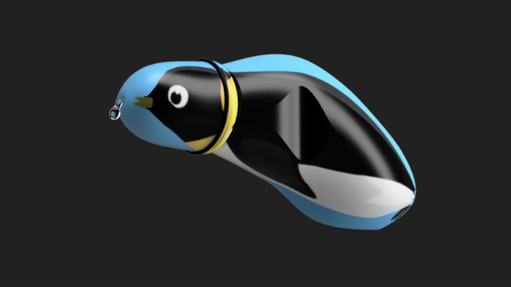
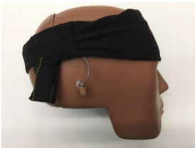

Mechanical Engineering PhD Student at Stanford
Sarah Glomski
I’m a PhD student and EDGE Doctoral Fellow at Stanford. I build robot learning pipelines, do systems engineering with haptics, and teach design as a course assistant for ME310. Before Stanford, I studied biomedical and mechanical engineering at Duke and worked on surgical robotics, medical devices, and CT imaging.

Projects
Academic, professional, and personal work — 13 write-ups and counting.

Designing a Rock-Climbing Robot to Traverse Extreme Terrain
In the first semester of my Master’s of Engineering program, I decided to join the Master’s Capstone course to get a taste of graduate-level robotics research. I teamed up with 4…

Standardizing Medicine with Robotics: From Sutures to Epidurals
As a Mechanical Engineering Master’s student with a background in Biomedical Engineering, I’ve been very interested in how engineering and technology can transform healthcare. My…

Appreciating Nature from the Sky
Nature and photography are two of my favorite hobbies, so when I received a DJI drone as a Christmas gift in 2022, it felt like the perfect fit. Since then, my drone has…
When2Tent: Kville’s Automated Shift Scheduler
As a Duke student, I embraced the vibrant tradition of the Cameron Crazies, the spirited student section renowned in college basketball. Each year, leading up to the Duke vs. UNC…

Monitoring Diabetic Foot Ulcers to Prevent Amputation
In my senior year at Duke, I took a comprehensive two-semester design course focused on bringing a medical device from concept to manufacturing. Alongside three talented…

Challenging the Current CT Calibration Techniques at Los Alamos National Lab
Living and working in Los Alamos when Christopher Nolan’s ‘Oppenheimer’ hit the theaters was a surreal experience. It allowed me to place myself directly in the shoes of the…
How I Engineered My Way to Earning Front Row Seats at the Duke vs UNC Game
As a Duke student, I was thrilled to dive into the tradition of the Cameron Crazies—known as the most passionate and spirited student section in all of college basketball. Each…

Redesigning the Humble Cystoscope
In my senior year at Duke, I took a course called Advanced Design and Manufacturing, in which I learned how to design a medical device from start to finish. We were assigned a…

Designing a Kid-Friendly Eye Dropper
For the final project in my Advanced Design and Manufacturing class, I was tasked with designing a device from start to finish to address a biomedical need. I decided to tackle a…

Rethinking an At-Home Blood Draw Device
During my summer internship at Gener8, I was always eager to learn about the various projects happening in the lab. One day, while chatting with a coworker, I learned about an…

Cartridge Design as a Gener8 Intern
During my summer as a product development intern at Gener8, I had the incredible opportunity to design disposable cartridges for biotechnology companies eager to launch their…

Using FEA to Protect Children in Car Crashes
During my senior year, I enrolled in a senior design course led by Dr. Jason Luck, who is renowned for his research on pediatric neck biomechanics and injury response. Given that…

Harnessing AI to Track Concussions in Football
I joined Duke’s Injury Biomechanics Lab during my freshman year, which helped me gain exposure to the world of research. One of the main goals of our lab has been to characterize…